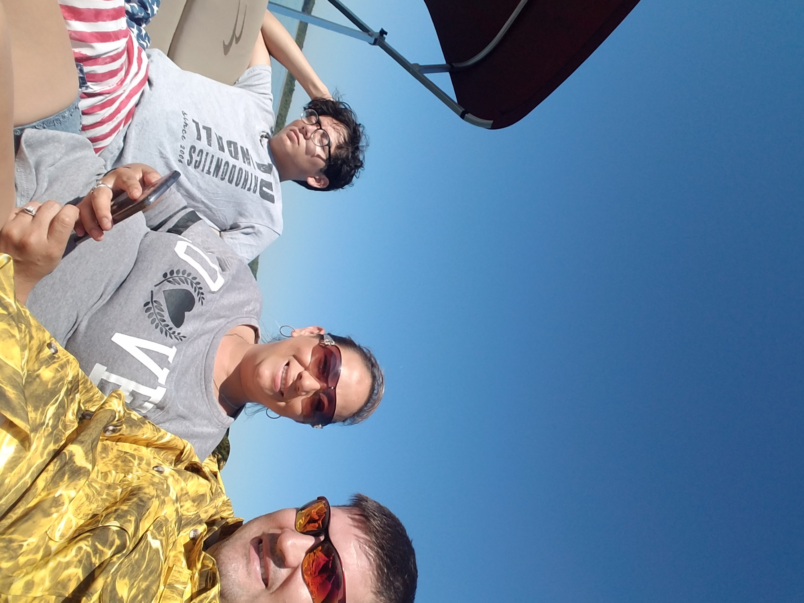

Silvia First learned how to fish from her husband about 15 years ago. She hates it when she has to throw back fish when she catches them because her husband does not keep or clean certen fish. But she loves to spend time on the lake with him all day long and enjoys the conversations they talk about all day.

Family
Silvia enjoys spend time with family and sitting on the deck with her kids. When it comes to family Silvia has always said that being close to your kids and family is the best medication a person can have. She also enjoys swimming with her granddaughter on hot summer days.
Building
Silvia enjoys working on her home and building or creating old object into new creations. She talked about taking old cabinets in the house a stripping them down and repainting them. Since she bought the home 2 years ago she has repainted all the rooms and bathrooms. She also has restained all the outside decks and is currently working on building new walls in the basement and getting it ready to paint.